Technical art highlights
- Shipped a production DCC plugin in Python/PySide for Substance Designer
- Automated tileable PBR map generation (Base Color, Normal, Roughness, Height, Metallic)
- Designed a gateway-based, model-agnostic architecture
- Ran local ONNX inference for normal-map extraction
- Built a searchable, versioned material library
01Overview
A production plugin for Adobe Substance 3D Designer that turns a text prompt into a seamless, tileable PBR material set without leaving the application. Artists stay in Designer; generation, tiling, map extraction, de-lighting, upscaling and library management all happen in one docked panel.
Before it existed, making a material from reference meant scanning or sourcing an image, cleaning it in Photoshop, hand-authoring PBR maps, repairing seams in a third tool, then re-importing. Each hand-off cost time and made material quality inconsistent between artists.
Built March – July 2026 at Tencent Games · TiMi J3 Studio · Delta Force. Confidential information has been excluded.
02My contributions
Plugin development
Built the panel in Python + PySide against the Substance Designer API, so results land directly as graphs and texture maps in the artist’s project.
Model-agnostic architecture
Designed a client–server split where the plugin never talks to a model directly; a gateway owns keys, accounts and routing.
PBR & image processing
Chained seamless tiling, PBR map extraction (including a local ONNX DeepBump model), de-lighting and upscaling into one pass.
Model research
Evaluated which foundation models hold up at each stage of tiling-material production, then hid that choice behind one control set.
Material library
Built create / version / natural-language search / reuse so generated materials become references for the next generation.
03End-to-end pipeline

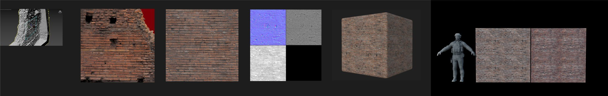
Before: scan → manual cleanup → hand-made PBR maps → seam fixing → re-import, across multiple tools." width="2200" height="349" loading="lazy">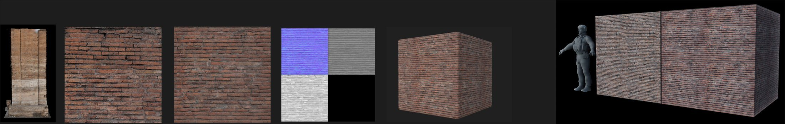
After: the same brick material generated, tiled, mapped and previewed without leaving Designer." width="2200" height="349" loading="lazy">- Authenticate: users sign in through a centralized API gateway that validates keys and manages access to AI services.
- Material seeding: generate several material concepts from a text prompt across different foundation models, with configurable resolution, aspect ratio and batch size.
- Seamless tiling: convert a generated texture into a tileable material with AI-assisted edge completion.
- PBR map extraction: produce Base Color, Roughness, Metallic, Normal and Height, with post-processing per map.
- Optimization: de-light and upscale, then save into the material library for reuse.
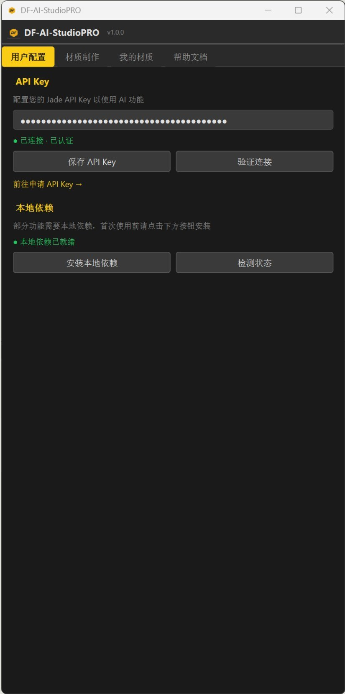
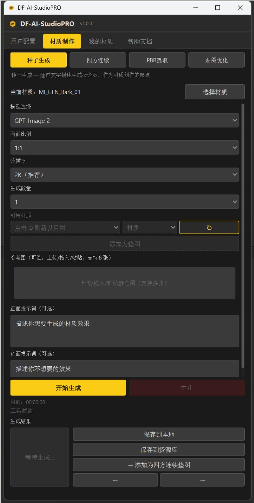
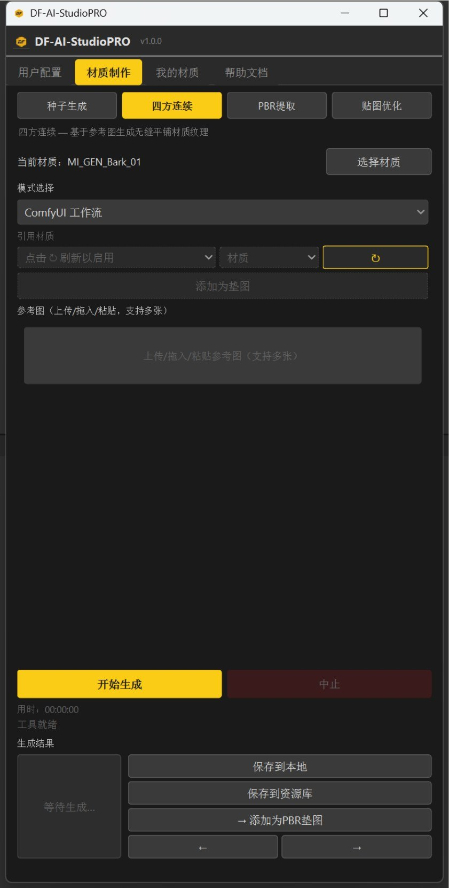
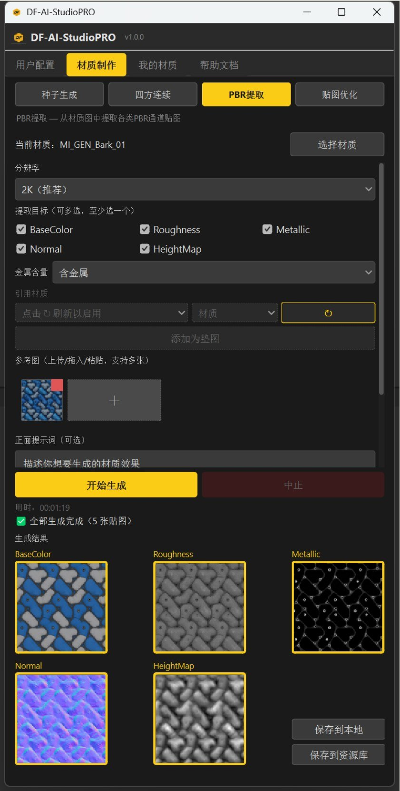
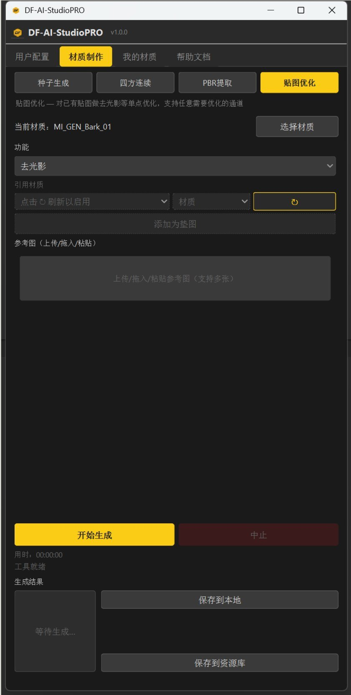
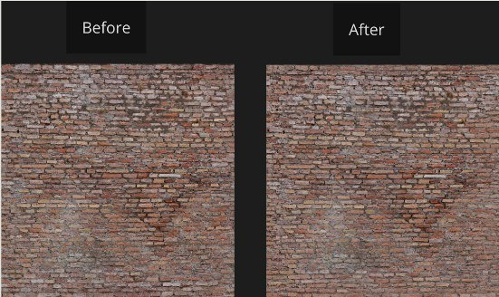
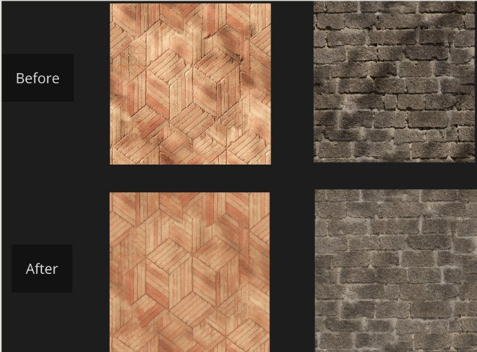
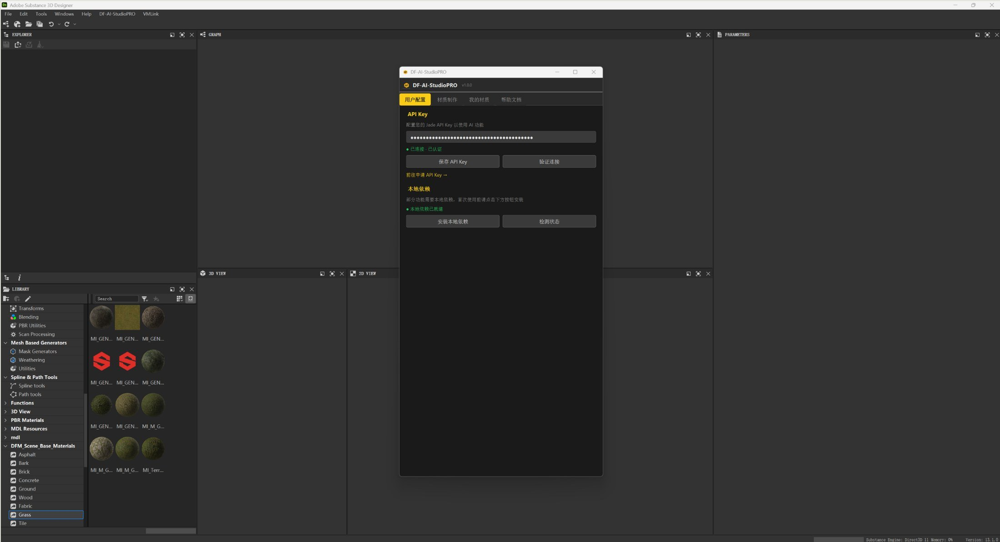
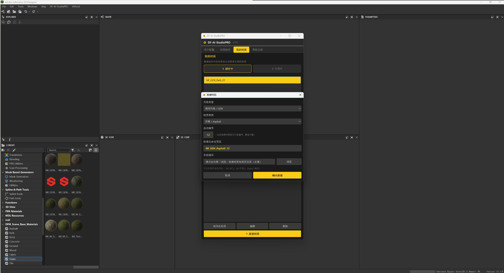
04System architecture
The plugin uses a modular client–server design. It never calls a model endpoint itself: every request goes through a gateway that handles keys, accounts and routing. That keeps credentials out of the client, keeps orchestration in one place, and lets a new foundation model be added without touching the artist-facing UI.
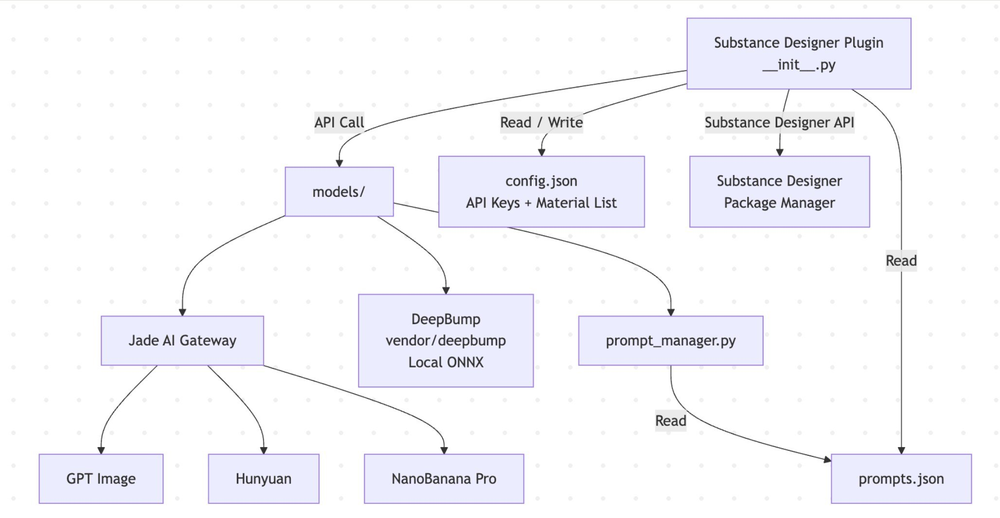
Module map: the plugin entry point reads config and prompts, callsmodels/, which routes through the AI gateway to the available image models, or runs DeepBump locally via ONNX." width="2056" height="1066" loading="lazy">models/, which routes through the AI gateway to the available image models, or runs DeepBump locally via ONNX.Unified client interface
Every model client implements the same generate_image() signature – task type, prompt, negative prompt, reference images, aspect ratio, resolution, PBR target, output path – and returns the same result shape, with success and failure handled identically. Swapping or adding a provider is a new client class, not a UI change.
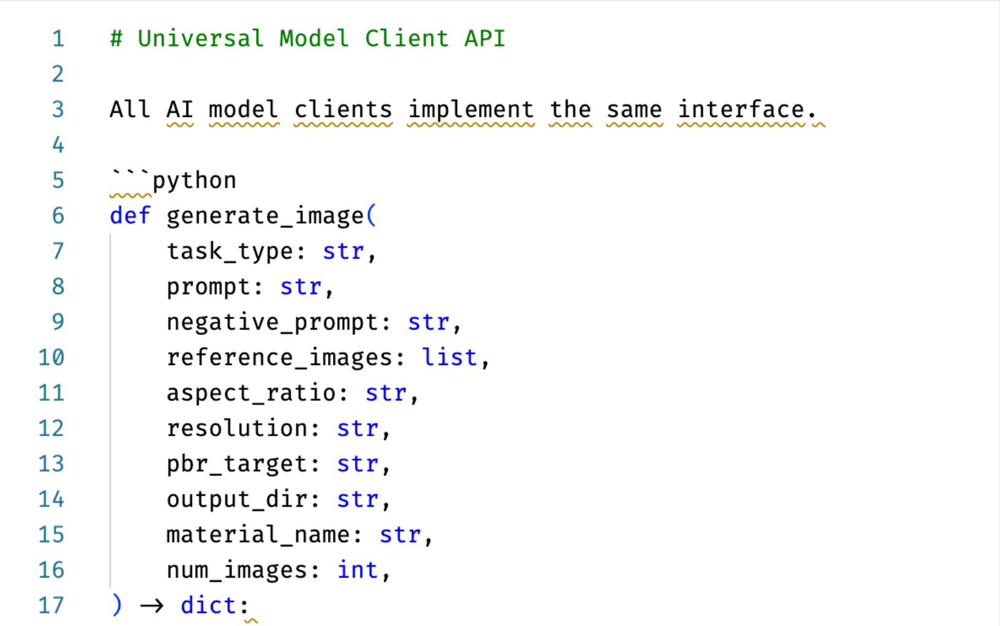
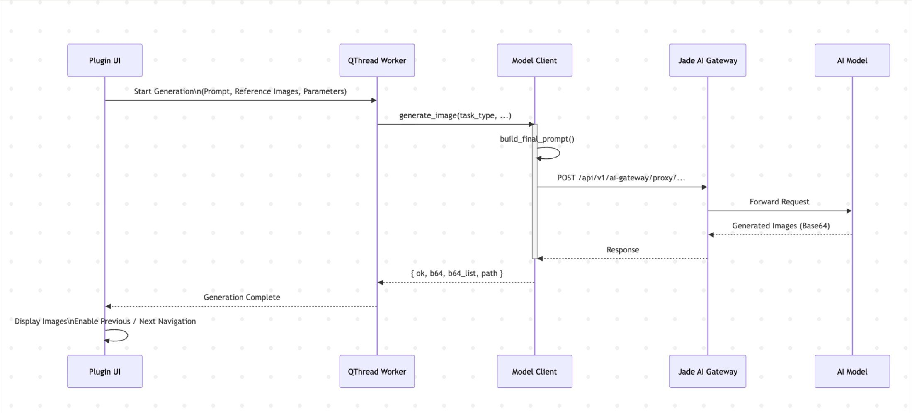
Request flow: UI → QThread worker → model client (builds the final prompt) → gateway → model, returned as Base64. Async work keeps Designer’s UI responsive." width="2200" height="998" loading="lazy">05Challenges & solutions
Fragmented material workflow
Texture cleanup, PBR authoring, seam repair and generation each lived in a different tool, so iteration was slow and material quality drifted between artists.
One workflow inside Designer
Consolidated generation, tiling, PBR extraction, optimization and library management into a single docked panel, so the material never leaves the application it will be used in.
Seams at the tile boundary
A generated texture is a picture, not a material: tiled across a surface it shows an obvious repeating seam.
AI-assisted edge completion, then verify by tiling
The tiling pass regenerates the wrap-around border, and the panel previews the result already tiled so the artist judges the material the way the engine will use it.
Many providers, many formats
Each provider had a different request structure, output format and size limit.
Unified interface behind a gateway
A standard request/response contract plus provider-specific adapters. New models are added as a class, invisible to the artist.
Keeping the DCC responsive
Remote generation takes seconds to minutes; a blocking call would freeze Designer.
Asynchronous execution
Requests run on QThread workers and return through signals, keeping interaction, request handling and inference separate.
06What I learned
- A material generator is only useful if its output survives contact with a real material graph. Judging every result tiled, lit and at map level mattered more than the prompt UI.
- Designing for replaceable models from day one paid off, because providers and model versions changed while the tool was in production.
- Running one model locally through ONNX (normal-map inference) was worth it: no round trip, no quota, and predictable results.